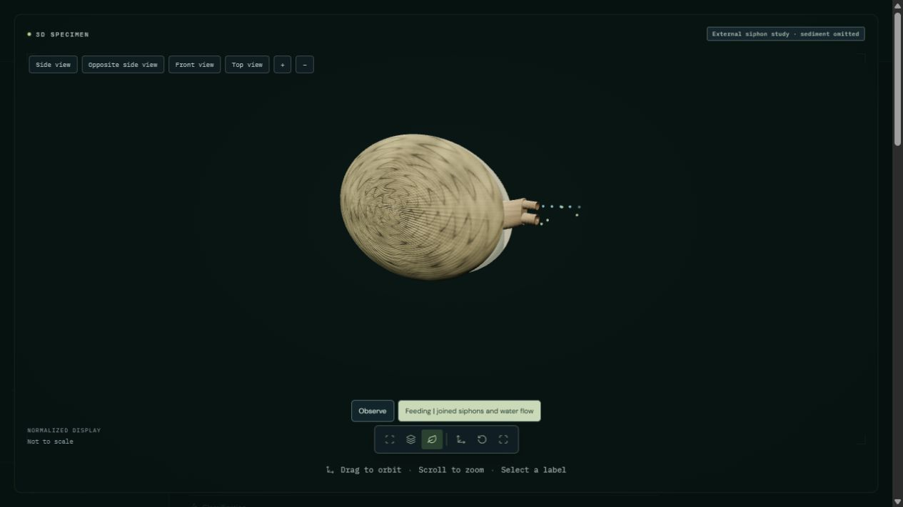

Open Manila clam | Common cockle study
The paired valves open slightly and joined siphonal tissue extends. Its two passages separate near their distal openings. Green markers approach the inhalant opening; blue markers show outward water direction, not food rejection. Sediment is omitted so the external structures can be inspected. The display ends after fourteen illustrative seconds; natural filtration is not restricted to that interval.
External valve opening, joined siphonal extension and two water-direction pathways are implemented. Ciliary pumping, gill capture, sorting, ingestion, digestion, measured flow and sediment interaction are not simulated. Distal sensory tentacles and complete mantle anatomy are omitted. Shell proportions, tissue pigment and optical response remain authored and not independently validated.

Habtemariam et al. (2015): comparative Ruditapes morphology and genetic identification. Page244 and Figure2 distinguish largely fused Manila-clam siphons from the separated siphons of R. decussatus. Guides qualitative external structure; does not measure this animation or water flow.
Houki et al. (2015): daily cycle of siphon extension in the Manila clam. Sequential tank observations documented extension and closure. Supports the behavior, not this 14-second timing, gait, flow or physiological model. Daily rhythms are not simulated.
The tissue between the passages remains present through most of the siphonal length. Both distal openings are annular, with open lumens. Original shell arrays, UVs, colors and materials are preserved, and the original parent transforms return outside this study. The natural substrate and internal organs are omitted, not inferred from the tracer animation.
45 animal processes remain fully unavailable. Partial studies retain their stated limitations. The private limpet mouth prototype has not been published or counted as an implemented feeding study.